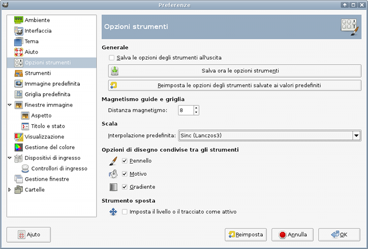
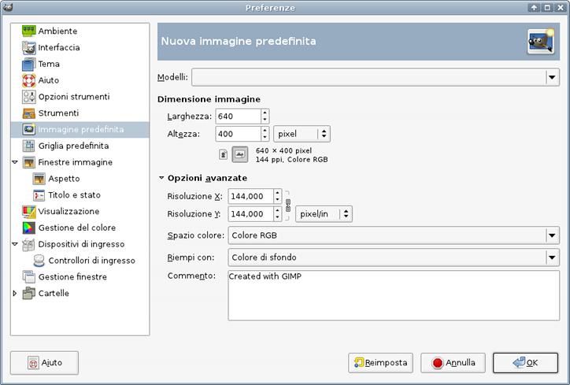
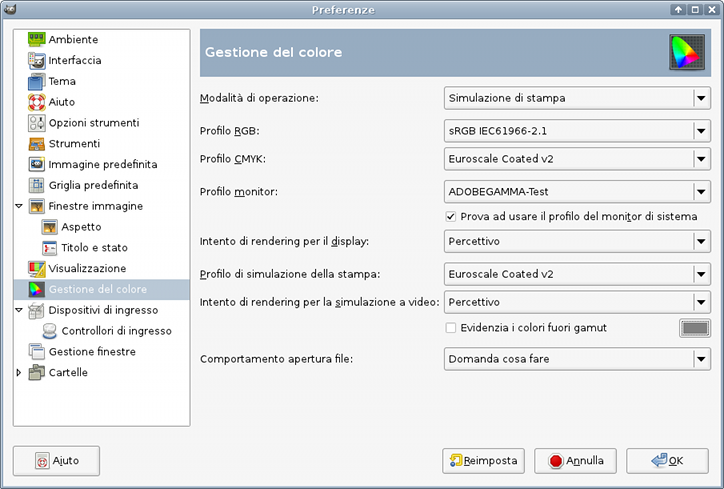

Non c'è molto da dire sulla migliore applicazione per il trattamento di immagini in Linux. I miglioramenti in GIMP 2.x sono troppi per elencarli.
Tuttavia, impostare GIMP per l'utilizzo con Scribus (il cui prodotto finale è destinato alla stampa) richiede alcuni aggiustamenti alle impostazioni predefinite, come mostrato sotto:
fontconfig, quindi il rilevamento dei caratteri presenti sul sistema è molto meno problematico. Il testo può essere mantenuto in un livello a sé per facilitarne la modifica e la correzione. Nelle versioni 1.2.x certe operazioni sul testo erano difficili, ma ora vi sono ben pochi motivi per lamentarsi; è un piacere usare i nuovi controlli per il testo. Inoltre esiste anche un apposito plugin freetype per GIMP, che permette di manipolare i caratteri come in Scribus e Inkscape. Lo consigliamo, e lo potete trovare su ftp.gimp.org.|  |
Come accade per la maggior parte dei programmi per la creazione e la modifica di immagini, le impostazioni predefinite di GIMP sono pensate primariamente per immagini destinate a siti web, il che significa che la risoluzione è di gran lunga troppo bassa per la stampa. Quindi, per prima cosa, impostate la risoluzione predefinita a un minimo di 144 DPI. Ricordate che l'uso di queste risoluzioni più alte provocherà la creazione di file di dimensioni molto maggiori, quindi potreste dover regolare anche le impostazioni di massimo utilizzo della memoria nelle preferenze di GIMP.
|  |
L'altra aggiunta notevole è la capacità (per ora a un livello molto semplice) di creare una prova colore a video (“soft proof”) con l'utilizzo della gestione del colore. Questa viene eseguita con LittleCMS (che è utilizzato anche da Scribus), e potete impostarla nelle preferenze. Ciò è utile se desiderate vedere l'aspetto dell'immagine in uno spazio colore CMYK quando sarà stampata o esportata in PDF.
|  |